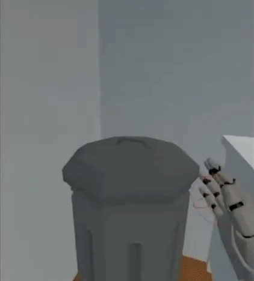
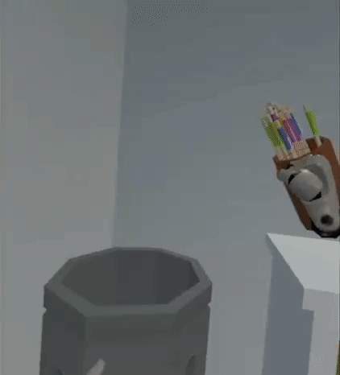
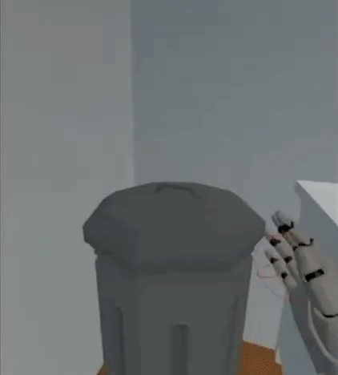
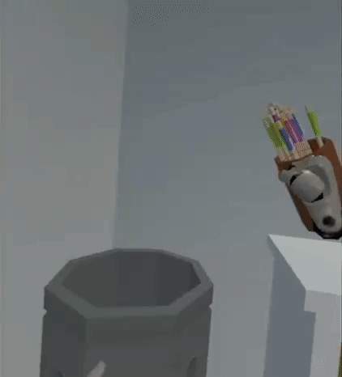
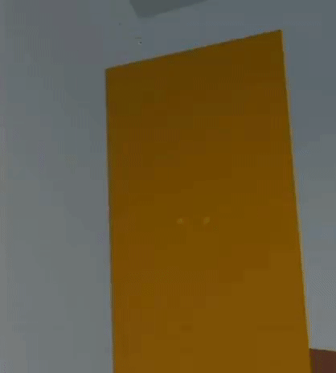
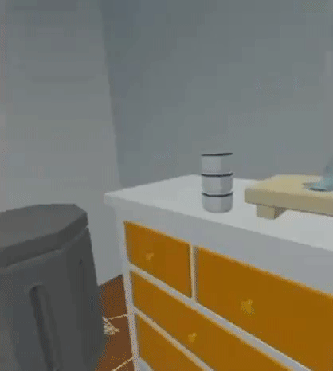
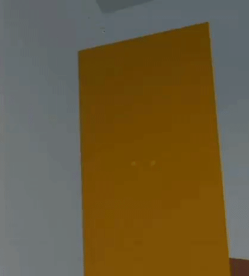
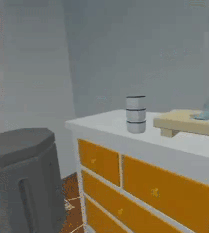

<Role: gameplay programmer, engineer, tech artist>
WHERE'S MY KEYS is a VR game prototype developed in UE4 during the two months at Framestore.
The game deliberately sabotages your every action in your search for your keys: handles flying off, pizzas falling apart, batteries popping out of a TV remote.
I was the gameplay programmer on the project, implementing mechanics as per the game designer. The unique challenge was to make things work while also slightly breaking them intentionally to achieve humorous frustration, such as a drawer sliding out completely upon grabbing the handle. I was also the tech artist, making sure the artist on my team had proper pipelines in our rapid prototyping process and was happy with how her art looked and acted in-game.
Below are some gameplay footage of isolated mechanics, during the middle of the development cycle.
 





 


